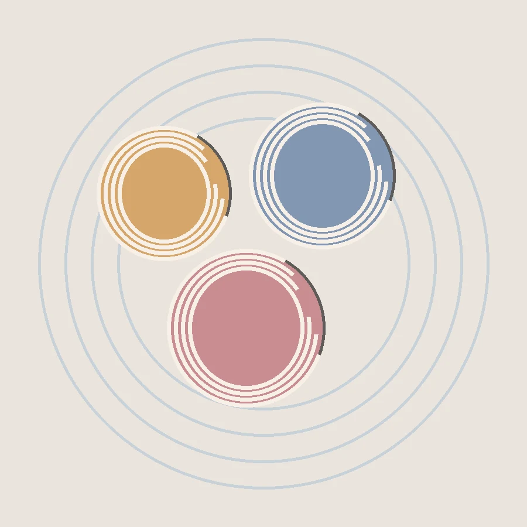
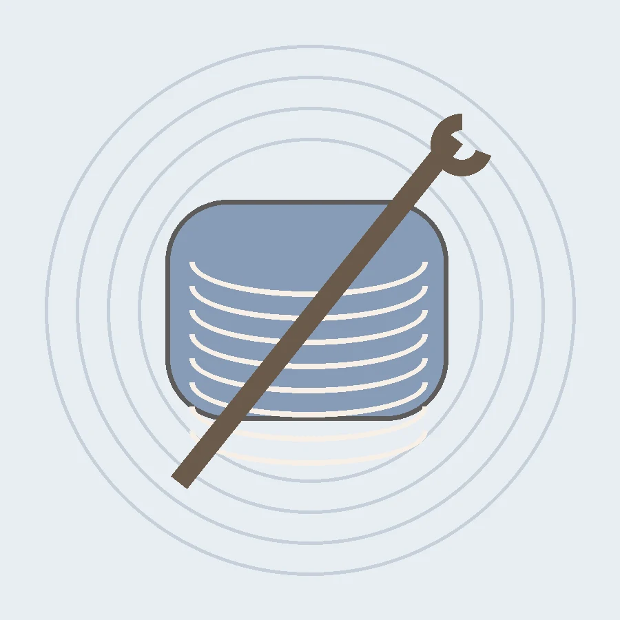
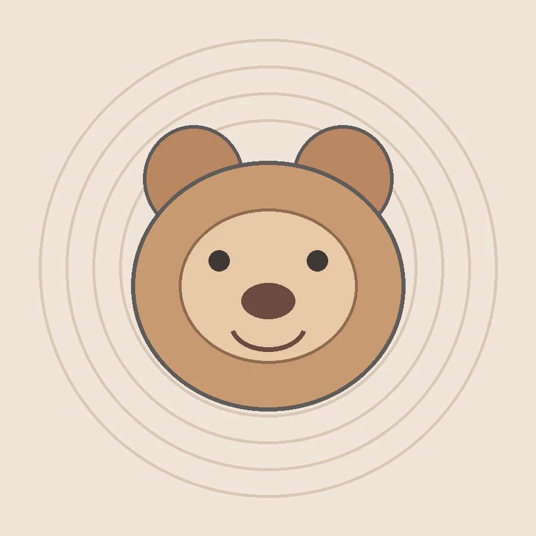
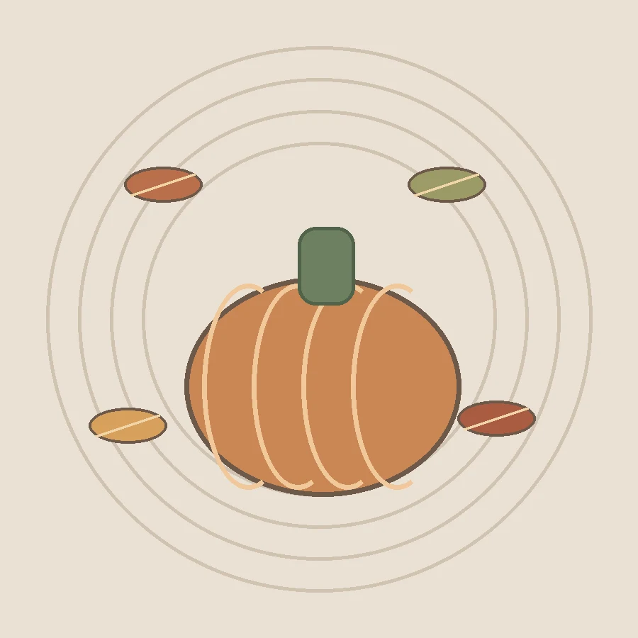

FREE PATTERNSA COLLECTION OF IDEAS
Free Crochet Patterns Collection
Explore a collection of free crochet patterns and find a project that suits your next creative afternoon.
Read Full Guide ↗YOUR NEXT HAPPY PLACE
Fresh crochet inspiration, beginner-friendly guides, and practical tools to help turn your next skein into something special.
Explore patterns →Try stitch calculator
THE PATTERN SHELF
Simple starts and satisfying stitches.
Choose a project below to open the full article on AffichFoot.

FREE PATTERNSA COLLECTION OF IDEAS
Explore a collection of free crochet patterns and find a project that suits your next creative afternoon.
Read Full Guide ↗
BEGINNERSTART WITH THE BASICS
Build confidence with a beginner-friendly introduction to crochet tools, stitches, and getting started.
Read Full Guide ↗
AMIGURUMIA CUTE AMIGURUMI PROJECT
Follow a step-by-step guide to making a charming crochet bear, from the main pieces to the finishing touches.
Read Full Guide ↗
AUTUMN DECORSEASONAL HOME INSPIRATION
Discover warm, handmade crochet decor ideas to bring an autumn feel to your home.
Read Full Guide ↗No patterns match your search.
A MAKER-SIZED HELPER
Estimate a starting stitch count using your gauge swatch. Your own measurements make the result more useful.
Gauge tip: measure your swatch across 10 cm (4 in) in the stitch pattern you plan to use.
Estimate stitches for your desired width.
YOUR ESTIMATE
64 stitchesEstimate based on your gauge. Check your pattern's stitch multiple.
SMALL LESSONS, BIG PROGRESS
01 / START HERE
Get introduced to the basics and start building your crochet skills.
Read full guide ↗02 / MAKE SOMETHING CUTE
Explore a step-by-step crochet bear project.
Read full guide ↗03 / SEASONAL IDEAS
Find crochet inspiration for a warm autumn home.
Read full guide ↗KEEP MAKING
Follow for project inspiration and crochet tips.